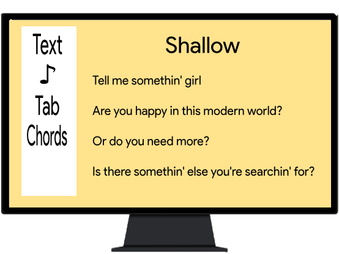
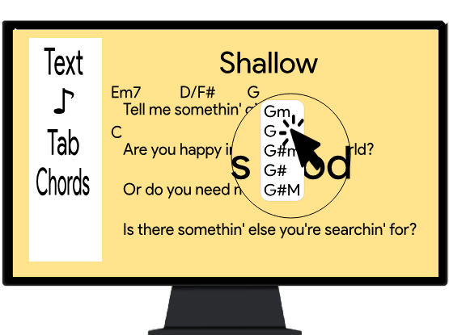
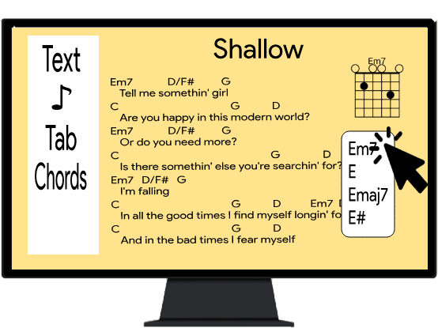
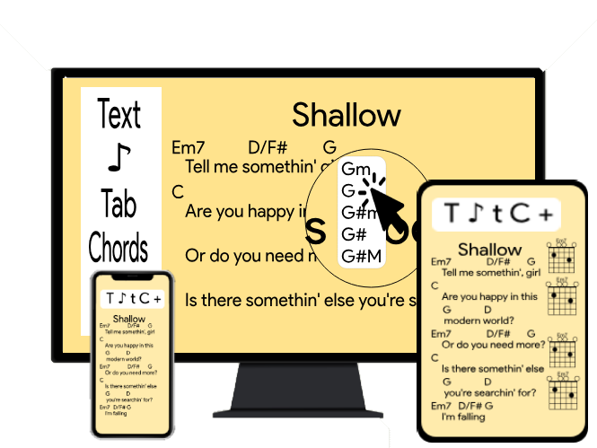

簡介
已經上架：EasySheet
登入因AWS更新無法使用，基本功能尚可運作！若想加入我們或是改善此網頁可以私訊我們！
簡介
你是否曾經...
想要抓一首新歌的chord，卻不知道該記在哪裡？
有個新靈感想要分享，卻因為沒有對的工具而稍縱即逝？
渴望有個完美的樂譜生成機，將源源靈感化為現實？
或許已有了類似功能，不想要簡體字或需要安裝的應用程式？
Well...
試試看 EasySheet！！
簡易卻強大的線上吉他簡譜編輯器
不需要打字，只要點選及貼上，只要三個步驟，即可生成一張符合你期望的文青吉他譜！
主要功能

STEP 1:
在標題列打上歌曲，歌詞即自動從網上抓取，或手動貼上歌詞。

STEP 2:
在歌詞上方點擊選取你所想要的音調。

STEP 3:
在空白處點擊，加上樂譜指示如刷法、指法、彈奏方法、picking、Tab...等。
最後...
點擊下載！
其他特色
這些功能還在構想中。透過意見調查，我們會新增各位所想要的功能。
電腦 & 智慧型手機
支援多種裝置，只要有網路，就能使用EasySheet。
分享
將你的個人樂譜分享至Facebook、Instagram、Twitter與好友分享。
雲端服務
將樂譜存入雲端，由各地裝置瀏覽。

進階樂譜指示
加入前、尾奏彈法、特殊指法、自訂chord，讓樂譜更專業。
評分系統
讓其他使用者能瀏覽並評價你的樂譜，準備大放異彩吧！
其他...
或許還有更多功能被我們忽略，請告訴我們！
關於我們
我們是清華大學的學生，修習網站課後想要做個有用的工具，EasySheet是用於教育的一個網站。
支持我們！
陳兆廷
電機系
沈永聖
電機系陳楚翔
資工系